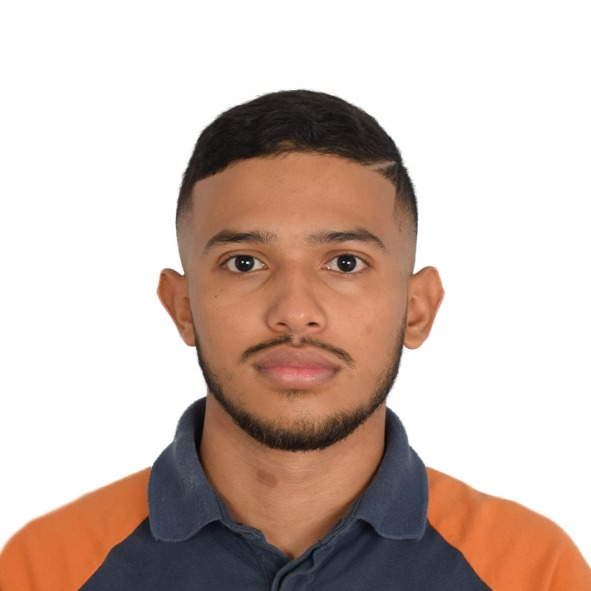

Mario de Jesús Álvarez Ramos
Ingeniero de Sistemas · Analista de Ciberseguridad Defensiva (SOC) · Administrador de Redes & Infraestructura TI
Profesional especializado en diseño y gestión de redes empresariales, administración de servidores (Linux/Windows), implementación de centros de operaciones SOC (Wazuh SIEM/XDR, Suricata NIDS) y fortificación de microservicios contenerizados en Docker. Enfocado en alta disponibilidad, resolución de contingencias en entornos productivos, automatización y defensa en profundidad.
Servicios con Acceso Público
Aplicaciones web expuestas a internet mediante pasarelas seguras Zero Trust con certificados TLS automáticos.
RiskGuard Enterprise
Sistema integral de gestión de riesgos TI. Arquitectura desacoplada en contenedores Docker (Nginx, PHP-FPM, MySQL 8.4, Redis, colas y scheduler), con Rate Limiting defensivo anti-fuerza bruta.
Showcase del Servidor & Auditorías
Portal técnico interactivo con la documentación de los 8 laboratorios de ciberseguridad, mitigación de conflictos en puerto 443, optimización de pasarelas FastCGI y pruebas de estrés DoS con ApacheBench.
Servicios de Gestión & SOC Defensivo
Consolas protegidas bajo arquitectura Zero Trust. Diseñadas bajo el principio de menor privilegio (PoLP), accesibles únicamente mediante nodos autorizados en la red privada corporativa.
Wazuh SIEM / XDR
Centro de operaciones SOC. Detección de amenazas en tiempo real, monitoreo de integridad (FIM con hashes SHA256), correlación de eventos con MITRE ATT&CK y mitigación activa con iptables en el kernel.
Uptime Kuma
Observabilidad y monitoreo continuo 24/7. Comprueba periódicamente la salud de RiskGuard, Wazuh Dashboard, base de datos MySQL y latencia del gateway de red.
Portainer CE
Gestión visual y telemetría de los contenedores en ejecución sobre el servidor. Administración de redes bridge, volúmenes de almacenamiento persistente y políticas de aislamiento.
Competencias Clave Verificadas
Capacidades técnicas demostradas y evaluadas en este entorno de servidores y redes reales.
Redes & Conectividad
- Arquitectura TCP/IP y Modelo OSI
- VLANs (802.1Q), Enrutamiento & Troncales
- Listas de Control de Acceso (ACLs) y NAT/PAT
- VPNs WireGuard y Tailscale Zero Trust
- Simulación Cisco Packet Tracer & Wireshark
- Servicios de Red (DNS, DHCP, SSH Hardened)
Ciberseguridad & SOC
- Wazuh SIEM/XDR y Suricata NIDS
- Monitoreo de Integridad FIM (Hashes SHA256)
- Detección de CVEs (NVD y Canonical OVAL)
- Respuesta Activa en Kernel (iptables DROP)
- Mapeo MITRE ATT&CK (T1110, T1070)
- Auditoría CIS Benchmark (SCA) e ISO 27001
Soporte TI N1 / N2
- Active Directory (AD DS, GPO, RBAC)
- Windows Server & Linux (Ubuntu/Debian)
- Diagnóstico y Resolución (Troubleshooting TI)
- Gestión de Incidentes bajo buenas prácticas ITIL
- Virtualización en VMware y VirtualBox
- Gestión de Copias de Seguridad & Continuidad
DevOps & Hardening
- Contenerización con Docker & Docker Compose
- Reverse Proxy Nginx y Rate Limiting defensivo
- Cifrado SSL/TLS con renovación automática
- Scripting y Automatización en Bash & PowerShell
- Control de versiones con Git & GitHub
- Bases de datos MySQL 8.4 y Cache Redis